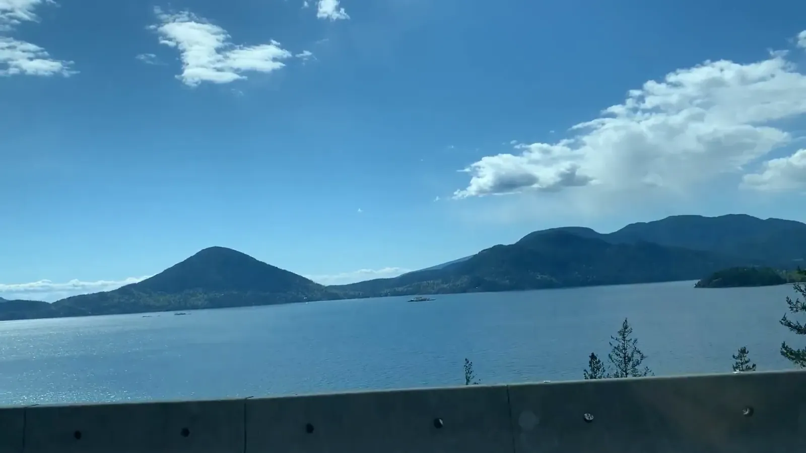

Sea to Sky
You can go from salt water to snow in a single drive. Will and I left Seattle on a Friday, crossed the border (bring your passport!), and rolled across the Lions Gate Bridge in flat gray light. Past the bridge, the Sea-to-Sky Highway hugs the shore of Howe Sound, a fjord that glaciers carved out of the Coast Mountains. The clouds sat on the forested ridges at first, then broke into patches of blue as we followed the water north. At Squamish the Stawamus Chief stepped out of the trees, a wall of granite roughly two thousand feet tall that the ice left standing at the head of the sound. A snow-capped peak waited at the end of the road. Garibaldi, I think.
Whistler Village is car-free, so park once and walk. More places should try it. In late April the last strip of snow at the foot of the mountain was slowly giving up on the plaza. Then we rode the lifts up, and just like that it was winter again! Wind-crusted drifts lay over black rock, and wide snowfields stretched away toward glaciated peaks. The weather tried a little of everything: clouds built over the ridges, a squall veiled the valley, and then the sun broke through and lit up the whole range.

On Sunday we followed the sound back south, the water bright in the sun and a small boat out on it, and drove down into spring. The ice that shaped Howe Sound has shrunk back a long way, and what is left of it holds out on the peaks above Whistler. In one weekend we had gone from where the ice was to where it still is.